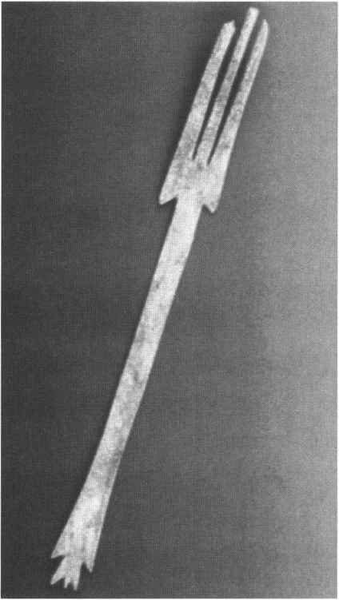
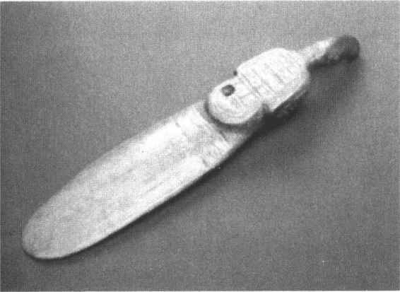
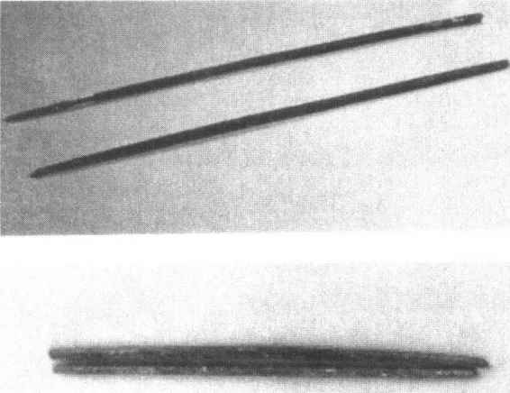
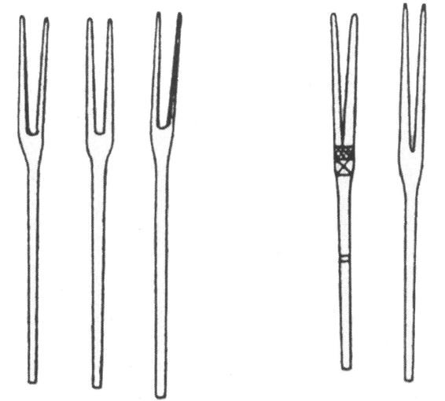

第二十一章
古代饮食文化

引子：勺子、叉子、筷子
人类进食采用的方式，在现代社会流行最广的是这样三种：用手指，用叉子，用筷子。用叉子的人主要分布在欧洲和北美洲，用手指抓食的人生活在非洲、中东、印度尼西亚及印度次大陆的许多地区，用筷子的人主要分布在东亚大部。中国人是用筷子群体的主体，是筷子的创制者，是筷子传统的当然传人。
远古时代的人类最初并不知道要凭借什么餐具享用食物，甚至还没有发明任何容器和取食用具，人们随手将食物取来送达口腔，一切顺其自然，这与其他灵长类动物并没有明显区别。到了饮食生活发展的一定阶段，进步中的人类的进食方式开始有了一些变化，不仅发明了烹饪用具，也创制了一些进食器具。古代中国人使用的进餐用具，主要有勺和筷子两类，还曾一度用过刀叉。中国人使用餐叉的历史，可以追索到五千多年前的史前时代，一些新石器晚期遗址发现了骨制餐叉。考古还发现一些商周时期的餐叉，有时墓葬中能见到数十枚骨餐叉放置在一起。不过中国历史上没有将餐叉作为首选的进食器具，它实际上是基本被淘汰出了餐桌，这显然是有更适用的筷子的缘故。（图21—1a-d）

图21-1a 齐家文化骨餐叉

图21-1b 河姆渡文化象牙匕

图21-1c 春秋铜箸

图21-1d 商周时期的骨餐叉
古代中国人使用餐勺的历史更为悠久，餐勺的起源可以追溯到距今8000年以前的新石器时代。新石器时代餐勺的制作材料，主要取自兽骨，而铜器时代则主要取用的是青铜。自战国时代开始，又出现了漆木勺。隋唐时期开始用白银大量打制餐勺，在上层社会白银打制餐勺的传统一直到宋元时代仍然受到重视。在历代皇室贵胄们的餐桌上，还常常摆有金质餐勺。勺与筷子一样，成为中华民族传统的进食器具。
最能体现中国文化特色的是筷子，它的使用可能已有不下5000年的历史，筷子被看做是中国的国粹之一。考古发现的各时代的筷子，有骨质的，有铜质的，也有金、银、玉和竹木质的。古代中国人在进食时，餐勺与箸通常是配合使用的，两者一般会同时出现在餐案上。汉代以后，比较正式的筵宴，都要同时使用勺和箸作为进食具。赏赐与贡献，匕箸也是不能分离的物件。唐宋时代筵宴上仍然要备齐勺和箸，在进食时对两者的使用范围区分得依然非常清楚。以箸食饭，以勺食羹菜，分工明明白白。
到了现代社会，正规的中餐宴会在餐桌上也要同时摆放勺与筷子，食客每人一套，这显然是古代传统的延续。使用筷子需要有一定的技巧，因为它是世界上所有进食具中最难掌握的一种，两支箸之间没有任何机械性联系，全靠大拇指，食指和中指三指恰当掌握，辅以无名指的协作，方能运用自如。
华夏民族历史上拥有过世界上各地区常用种类的进食具。在所有以往使用过的进食具中，筷子具有比之刀、叉还要轻巧、灵活、适用的优点，我们的历史曾经淘汰了叉子，现在的许多场合正在淘汰勺子，但筷子的地位依然稳如泰山，一丝也没有动摇。